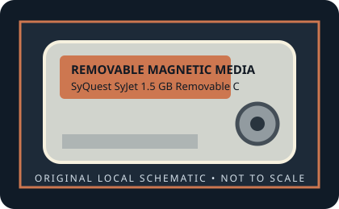

[ REMOVABLE MEDIA // MODEL-SPECIFIC RECORD ]
SyQuest SyJet SQ1500 1.5 GB Removable Cartridge
SyQuest SyJet 1.5 GB removable hard-disk cartridge generation (late 1990s). 1.5 GB nominal removable magnetic-disk capacity, sealed in a rigid cartridge.

IDENTIFICATION: Verify the exact capacity, physical format, and generation printed on the medium. A cartridge has no host interface of its own; drive interface and system support must be checked against the exact reader model.
Format, capacity and compatibility
| Product / media model | SyQuest SyJet SQ1500 1.5 GB Removable Cartridge |
|---|---|
| Generation / format | SyQuest SyJet 1.5 GB removable hard-disk cartridge generation (late 1990s). |
| Capacity and medium | 1.5 GB nominal removable magnetic-disk capacity, sealed in a rigid cartridge. |
| Media and drive interface | The cartridge has no host interface. Interface is determined by the SyJet drive; interface-specific internal and external units require their matching host connection and driver. |
| Compatibility | Requires a SyQuest SyJet 1.5 GB drive; it is not a Zip, Jaz, EZFlyer, or SparQ cartridge. Drive variants used different host connections, so match the cartridge to a SyJet mechanism and separately verify its SCSI/IDE/parallel variant, OS driver, and filesystem. |
| Version and model caveat | Do not infer cross-compatibility from the similar removable-cartridge form factor. Confirm the SyJet logo and 1.5 GB labeling, and use the exact drive manual for interchange and hot-swap rules. |
Handling and preservation
Keep the cartridge in its protective case, away from dust, moisture, heat, strong magnetic fields, and physical shock. Do not open a sealed cartridge or force it into a drive. For preservation, image read-only with a known-compatible mechanism, retain the source media, record the drive/interface used, and verify copied data with checksums.
- Photograph the label and shell before use; preserve packaging, write-protect state, and acquisition notes.
- Keep at least two independent verified copies of important data. A legacy removable cartridge by itself is not an archival strategy.
Model and generation notes
Do not infer cross-compatibility from the similar removable-cartridge form factor. Confirm the SyJet logo and 1.5 GB labeling, and use the exact drive manual for interchange and hot-swap rules.
Storage capacity names and drive interface names describe different things: confirm the cartridge format/generation first, then check the exact reader model, host connector, controller, operating-system driver, and filesystem separately.
Sources and standards
- Internet Archive — SyQuest SyJet 1.5 GB manualsSearches archived SyJet product manuals and drive documentation for the specific 1.5 GB generation.
- SyQuest product history and model listIdentifies the SyJet drive/SQ1500 disk as a 1.5 GB removable-disk generation and places it among SyQuest’s product families.
- Museum of Obsolete Media — SyQuest EZ135 recordIndependent historical context for SyQuest removable-disk cartridge systems; the SyJet manual remains the authority for its exact drive compatibility.
Discontinued-media specifications are cross-checked against period product material and museum/archive documentation. Family-level history does not replace the exact drive manual for interchangeability.